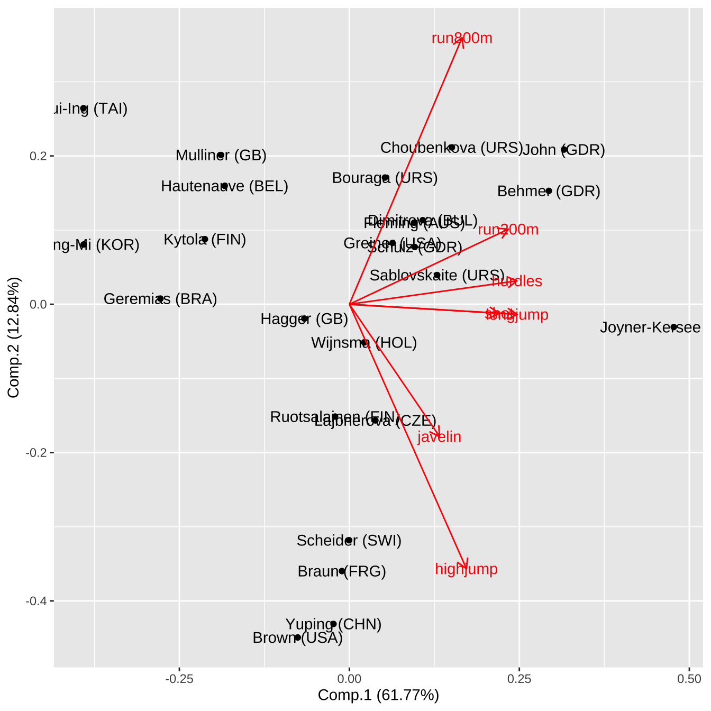
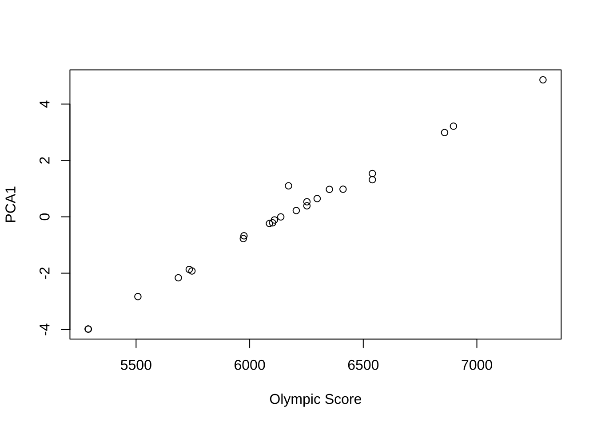

library(tidyverse)
library(here)
library(knitr)
library(mvtnorm)
library(ggfortify)
library(HSAUR2)
library(pheatmap)
#아래 3 문장은 한글을 포함한 ggplot 그림이 포함된 HTML, PDF로 만드는 경우 사용
library(showtext)
#font_add_google("Nanum Pen Script", "gl")
font_add_google(name = "Noto Sans KR", family = "noto")
showtext_auto()6 주성분 분석
다변량 데이터를 다룰 때 문제점 중 하나는 단순히 변수가 너무 많아 데이터에 대한 유익한 초기 평가를 성공적으로 수행하기 어렵다는 점이다. 변수들 사이의 복잡한 상관관계는 분석에 어려움을 더한다. 또한 변수가 너무 많으면 연구자가 데이터에 적용하고자 하는 다른 다변량 기법에도 문제를 일으킬 수 있다.빅데이터가 흔한 시데에 데이터는 넘쳐나지만, 그 속에서 진짜 중요한 정보를 찾아내는 일은 점점 더 어려워지고 있다.
주성분 분석(PCA, Principal Component Analysis)은 단순히 하나의 통계 기법을 넘어, 데이터를 이해하는 새로운 방식을 제시한다. 주성분 분석은 다변량 자료의 변수들 속에 숨어 있는 공통된 구조를 발견하고, 이를 소수의 새로운 변수로 변환하는과정이다. 수십 개의 변수를 그대로 바라보면 혼란스러울 뿐이다. PCA는 이 변수들을 새로운 좌표계로 옮겨, 가장 큰 변동을 담아내는 방향으로 새로운 변수를 찾아낸다. 첫 번째 주성분이 데이터의 전체 흐름을 포착하고, 두 번째 주성분이 남은 변동을 설명한다. 이렇게 서로 직교하는 변수들이 순차적으로 만들어지면서, 데이터가 가지고 있는 변동을 2-3 개의 새로운 변수로 단순하게 많은 부분을 설명할 수 있다.
주성분 분석의 목적은 분명하다. 첫째, 차원을 축소하여 핵심적인 소수의 변수들만 남기는 것이다. 복잡한 다변량을 2-3 개의 주성분으로 요약하면, 분석은 훨씬 단순해진다. 주성분 분석은 자료가 많은 수의 변수들(Variables)로 구성되어 있는 경우 적은 개수의 변수로 자료의 차원을 축소하는 것이 주요한 목적이다(Dimension Reduction). 또한 이렇게 차원을 축소하는 경우 원래 변수들이 가지고 있던 변동(Variation)을 차원이 축소된 경우에도 최대한 유지할 수 있도록 한다.
둘째로 주성분 분석은 데이터의 시각화를 더욱 쉽게 수행할 수 있다. 수십 차원의 세계를 2차원, 3차원으로 투영해 보면, 군집은 또렷해지고 이상치는 드러난다. 셋째, 주어진 변수들의 복잡한 상관관계를 검토하고 분석할 필요가 없어진다. 서로 얽힌 변수들을 직교하는 주성분으로 바꿔놓으면, 다중공선성이라는 문제는 자연스레 사라진다.
주성분 분석은 특정 학문에만 국한되지 않는다. 사회과학에서 복잡한 설문 문항을 요약하는 데, 생물학에서 유전자 발현 데이터의 패턴을 찾는 데, 경영학에서 고객 행동의 핵심 요인을 도출하는 데, 더 나아가 인공지능에서 이미지나 텍스트의 고차원 정보를 다루는 데까지, 그 쓰임새는 한계가 없다.
6.1 이변량 확률벡터의 변환
6.1.1 이변량 정규분포
먼저 주성분분석의 기본개념을 이해하기 위하여 다음과 같은 평균 \(\pmb \mu\)인 이차원 확률벡터 \(\pmb X =(X_1, X_2)^t\) 가 아래와 같이 공분산을 가지는 정규분포를 따른다고 하자.
\[ \pmb X \sim N_2( \pmb \mu, \pmb \Sigma), \quad E(\pmb X) = \pmb \mu = \begin{bmatrix} \mu_1 \\ \mu_2 \end{bmatrix}, \quad \pmb \Sigma = V(\pmb X) = \begin{bmatrix} \sigma_{11} & \sigma_{12} \\ \sigma_{12} & \sigma_{22} \\ \end{bmatrix} \]
확률벡터 \(\pmb X\)의 상관계수행렬 \(\pmb C\) 는 다음과 같이 표시한다. \[ \pmb C = \begin{bmatrix} 1 & \rho \\ \rho & 1 \\ \end{bmatrix}, \quad \rho = \frac{\sigma_{12}}{ \sqrt{\sigma_{11} \sigma_{22}}} \]
참고할 사항은 상관계수행렬은 표준화된 확률변수 \(Z_i = (X_i - \mu _i)/\sqrt{\sigma_{ii}}\)의 공분산 행렬이다. 이유는 다음과 같이 보일 수 있다. 일단 표준화된 확률벡터 \(\pmb Z = (Z_1, Z_2)^t\)를 정의하자.
\[ \pmb Z = \begin{bmatrix} (X_1 - \mu _1)/\sqrt{\sigma_{11}} \\ (X_2 - \mu _2)/\sqrt{\sigma_{22}} \end{bmatrix} = \begin{bmatrix} 1/\sqrt{\sigma_{11}} & 0 \\ 0 & 1/\sqrt{\sigma_{22}} \\ \end{bmatrix} \begin{bmatrix} (X_1 - \mu _1) \\ (X_2 - \mu _2) \end{bmatrix} = \pmb D (\pmb X - \pmb \mu) \] 여기서 \(\pmb D\)는 각 변수의 표준편차의 역수를 대각원소로 가지는 대각 행렬이다. 표준화된 확률벡터 \(\pmb Z\)의 공분산은 다음과 같이 유도된다.
\[ \begin{aligned} V(\pmb Z ) &= E( [\pmb D (\pmb X - \pmb \mu)] [\pmb D (\pmb X - \pmb \mu)]^t ) \\ &= \pmb D E( (\pmb X - \pmb \mu) (\pmb X - \pmb \mu)^t ) \pmb D^t \\ &= \pmb D \Sigma \pmb D^t \\ &= \begin{bmatrix} 1/\sqrt{\sigma_{11}} & 0 \\ 0 & 1\sqrt{\sigma_{22}} \\ \end{bmatrix} \begin{bmatrix} \sigma_{11} & \sigma_{12} \\ \sigma_{12} & \sigma_{22} \\ \end{bmatrix} \begin{bmatrix} 1/\sqrt{\sigma_{11}} & 0 \\ 0 & 1\sqrt{\sigma_{22}} \\ \end{bmatrix} \\ &= \begin{bmatrix} 1 & \rho \\ \rho & 1 \\ \end{bmatrix} \end{aligned} \]
6.1.2 주성분의 기준과 생성방법
일반적으로 주성분 분석에서는 확률벡터 \(\pmb X\)의 평균이 \(\pmb 0\)이라고 가정한다. 주성분 분석은 원래 변수들의 위치(location, 즉 평균)에 영향을 받는 방법이 아니라 자료의 변동(variation, 즉 분산)을 최대로 유지하는 새로운 변수를 만드는 것이 목적이다. 따라서 평균이 \(\pmb 0\)이 아닌 확률벡터 \(\pmb X_*\)도 그 평균을 뺀 벡터 \(\pmb X\)로 변환하여 평균을 \(\pmb 0\)으로 만들고 주성분분석을 적용한다.
\[ \text{Let } \pmb X = \pmb X_* - E(\pmb X_* )=\pmb X_* - \pmb \mu_* ,
\text{ then } E(\pmb X)=0, ~~ V(\pmb X) = V(\pmb X_*) \] 아래부터는 특별한 언급이 없으면 확률벡터 \(\pmb X\)가 평균이 \(\pmb 0\)이라고 가정한다.
이제 평균이 0이고 공분산(상관계수행렬)이 다음과 같이 주어지는 이변량정규분포를 생각해보자. \[ \pmb \Sigma = \begin{bmatrix} 2 & 1.5\\ 1.5 & 2 \end{bmatrix} \tag{6.1}\]
참고로 두 변수의 상관계수는 \(\rho = 1.5/2 = 0.75\) 이다
R 의 패키지 중 mtvnorm 을 사용하면 다변량분포에 대한 다양한작업을 손쉽게 할 수 있다. 다음 R 프로그램은 위에 주어진 공분산행렬 을 가지는 이변량정규분포 화률밀도함수의 2차원 등고선그림이다.
library(mvtnorm)
library(ggplot2)
library(dplyr)
#### 평균과 공분산
mu <- c(0, 0)
sigma <- matrix(c(2, 1.5, 1.5, 2), nrow = 2)
# grid 만들기
x.points <- seq(-4, 4, length.out = 100)
y.points <- seq(-4, 4, length.out = 100)
grid <- expand.grid(x1 = x.points, x2 = y.points)
#### 확률밀도 계산
grid$z <- dmvnorm(grid[, c("x1", "x2")], mean = mu, sigma = sigma)
#### ggplot으로 contour 그리기
p <- ggplot(grid, aes(x = x1, y = x2, z = z)) +
geom_contour(color = "black") +
geom_hline(yintercept = 0, linetype = "dashed") +
geom_vline(xintercept = 0, linetype = "dashed") +
geom_abline(slope = 1, intercept = 0, color = "red" ,linewidth = 1.5) +
geom_abline(slope = -1, intercept = 0, color = "blue",linewidth = 1.5) +
geom_abline(slope = 1.5, intercept = 0, color = "black") +
geom_abline(slope = 0.5, intercept = 0, color = "black") +
labs(x = "X_1", y = "X_2", title = "이차원 정규분포의 확률빌도함수(rho = 0.75) ")
print(p)
위의 그림에서 이차원 평면 상의 이차원 정규분포 밀도함수 등고선을 보면 분포의 퍼진 정도가 가장 큰 방향의 축이 원점을 지나고 기울기가 1 인 직선임을 알 수 있다(빨간 색 직선) 또한 이 직선과 직교하는 선은 원점을 지나고 기울기가 -1 인 직선임을 알 수 있다(파란 색 직선 )
이제 각 확률변수 \(X_i\) 의 선형 변환으로 새로운 확률변수 \(Z_i\) 를 다음과 같이 정의한다.
\[ Z_1 = a_{11} X_1 + a_{12} X_2, \quad Z_2 = a_{21} X_1 + a_{22} X_2 \] 새로운 확률벡터 \(\pmb Z =(Z_1, Z_2)^t\) 는 다음과 같이 표시할 수 있다. \[ \pmb Z = \pmb A \pmb X \text{ where } \pmb A = \begin{bmatrix} a_{11} & a_{12} \\ a_{21} & a_{22} \end{bmatrix} \tag{6.2}\]
이렇게 새로운 확률 변수 \(Z_i\)를 만들 때 첫번째 변수 \(Z_1\) 를 첫번째 주성분(the 1st Principal Component)이라고 하며 원래 확률 벡터 \(\pmb X\)가 가지는 총 변동 중에 최대한 큰 변동을 가질 수 있도록 만들고(빨간 색 직선 방향) 두번째 변수 \(Z_2\) 를 두번째 주성분(the 2nd Principal Component) 이라고 부르고 첫번째 변수 \(Z_1\)과 공분산이 0 이면서 나머지 변동을 가질 수 있도록(파란색 직선 방향) 만드는 방법이 주성분(principal components)을 만드는 기준이다.
- \(\max V(Z_1)\)
- \(Cov(Z_1,Z_2) =0\)
- \(V(Z_1) + V(Z_2) = V(X_1) + V(X_2)\)
위의 조건을 만족하는 선형변환 \(\pmb Z\)는 공분산행렬 \(\pmb \Sigma\)의 고유값과 고유벡터로 구할 수 있다. 식 6.1 에 주어진 공분산행렬은 양정치 행렬이므로 고유값(eigen value) \(\lambda_1 > \lambda_2>0\)가 모두 양수이고 각 고유치에 대응하는 정규 직교 고유벡터(orthonormal eigen vector)의 행렬 \(\pmb P\)을 이용하여 다음과 같은 분해가 가능하다.
\[ \Sigma = \pmb P \pmb \Lambda \pmb P^t \tag{6.3}\]
여기서 식 6.1 에 대해서 식 6.3 에 주어진 행렬의 분해를 구해보면 아래와 같다.
\[ \pmb \Lambda = \begin{bmatrix} \lambda_1 & 0\\ 0 & \lambda_2 \end{bmatrix} = \begin{bmatrix} 7/2 & 0\\ 0 & 1/2 \end{bmatrix} , \quad \pmb P = \begin{bmatrix} 1/\sqrt{2} & -1/\sqrt{2}\\ 1/\sqrt{2} & 1/\sqrt{2} \end{bmatrix} \] 식 6.2 에서 정의된 선형변환을 다음과 같이 정의하면
\[ \pmb A = \pmb P^t \text{ so that } \pmb Z = \pmb P^t \pmb X \] 주성분은 다음과 같이 만들어 진다. \[ Z_1 = \frac{1}{\sqrt{2}} X_1 + \frac{1}{\sqrt{2}} X_2, \quad Z_2 = -\frac{1}{\sqrt{2}} X_1 + \frac{1}{\sqrt{2}} X_2 \]
이렇게 만들어진 주성분 벡터의 공분산 행렬을 구해보자
\[ \begin{aligned} V(\pmb Z) & = V(\pmb P^t \pmb X) \\ & = \pmb P^t V(\pmb X) \pmb P \\ & = \pmb P^t \pmb \Sigma \pmb P \\ & = \pmb P^t \pmb P \pmb \Lambda \pmb P^t \pmb P \\ & = \pmb \Lambda \end{aligned} \]
위의 유도식에서 정규직교 고유벡터 \(\pmb P\)는 직교행렬이므로 (i.e. \(\pmb P^t \pmb P=\pmb I\))
\[ V(\pmb Z) = \pmb \Lambda = \begin{bmatrix} 7/2 & 0\\ 0 & 1/2 \end{bmatrix} \] 따라서 첫번째 주성분의 분산은 가장 큰 고유치가 되고 두 번째 주성분의 분산은 두 번째 고유치가 되며 두 주성분의 공분산은 0이고 정규분포이므로 독립이다. \[ \pmb Z \sim N_2( \pmb 0 , \pmb \Lambda) \] 또한 다음의 관계가 성립한다.
\[ V(Z_1)=3.5,~~ V(Z_2)=0.5,~~ Cov(Z_1,Z_2) =0,~~ V(Z_1) + V(Z_2) = V(X_1) + V(X_2) \]
다음은 주성분 벡터 \(\pmb Z\)의 이변량정규분포의 2차원 등고선그림이다.
# 평균 벡터와 공분산 행렬
mu <- c(0, 0)
sigma1 <- matrix(c(3.5, 0,
0, 0.5), nrow = 2)
# x, y 격자 만들기
x.points <- seq(-5, 5, length.out = 100)
y.points <- seq(-5, 5, length.out = 100)
grid <- expand.grid(x = x.points, y = y.points)
# 이변량 정규분포 밀도 계산
grid$z <- dmvnorm(cbind(grid$x, grid$y), mean = mu, sigma = sigma1)
# ggplot2 시각화
p <- ggplot(grid, aes(x = x, y = y, z = z)) +
geom_contour(color = "blue") +
geom_hline(yintercept = 0, linetype = "dashed") +
geom_vline(xintercept = 0, linetype = "dashed") +
labs(x = "Z_1", y = "Z_2", title = "두 주성분의 분포")
print(p)
위와 같이 만든 첫번째 주성분은 원래 변수가 가지고 있는 총변동 \(V(X_1)+V(X_2) = 4\)의 85.7%를 설명한다.
\[ \frac{V(Z_1)}{V(X_1)+V(X_2)} = \frac{V(Z_1)}{V(Z_1)+V(Z_2)} = \frac{\lambda_1}{\lambda_1+\lambda_2} = \frac{3.5}{4} = 0.857 \]
원래의 두 변수 \(X_1\)과 \(X_2\)를 모두 사용하지 않고 하나의 주성분 \(Z_1\)만으로서 분포의 전체 변동의 큰 부분(85.7%)을 설명할 수 있다. 이러한 논리가 주성분을 이용한 차원의 축소이다.
6.1.3 상관계수행렬을 통한 주성분분석
각 변수는 숫자로 나타나므로 측정할 경우 그 단위(unit)가 있다. 하지만 측정 단위들은 변수에 따라 또는 측정하는 사람에 따라 다를 수 있다. 예를 들어 키를 측정하는 경우 센티미터(cm)를 사용하고 몸무게를 측정하는 경우 킬로그램(Kg)를 사용한다. 또한 같은 변수인 키를 측정하는 경우에 센티미터(cm)대신 미터(m)를 사용할 수도 있다.
공분산행렬은 각 변수의 측정단위에 따라 변하며 그에 따른 고유값과 고유벡터도 변한다. 즉 주성분분석은 변수의 측정 단위에 따라 변할 수 있다.
예를 들어 식 6.1 을 공분산으로 가지는 확률벡터에서 첫번째 확률변수 \(X_1\)를 키라고 하고 그 측정단위가 미터(m)라고 가정하자. 만약 키의 측정단위를 센티미터로 바꾼다면 \((100 \times X_1)\) 단위가 바뀐 확률벡터의 공분산행렬은 다음과 같이 변한다.
\[ \pmb \Sigma = \begin{bmatrix} (10000)(2) & (100)(1.5)\\ (100)(1.5) & 2 \end{bmatrix} = \begin{bmatrix} 20000 & 150\\ 150 & 2 \end{bmatrix} \tag{6.4}\]
위에서 변환된 공분산행렬의 고유값과 고유벡터를 구해보면 다음과 같다.
sigma <- matrix(c(20000,150,150,2),nrow=2) # 공분산행렬
sigma [,1] [,2]
[1,] 20000 150
[2,] 150 2eigen(sigma)eigen() decomposition
$values
[1] 2.000113e+04 8.749508e-01
$vectors
[,1] [,2]
[1,] -0.999971874 0.007500117
[2,] -0.007500117 -0.999971874가장 큰 고유치는 \(\lambda_1= 20000\)에 가깝고 다음 고유치는 거의 0이다 (\(\lambda_2 \sim 0\)) 또한 고유벡터는 거의 단위행렬에 가까우므로 첫번째 주성분은 키를 나타내는 원래 변수와 동일하고(부호만 바뀐다) 전체 변동을 대부분 설명하며 두번째 주성분은 거의 설명하는 변동이 없게된다.
위와 같은 현상은 공분산행렬을 주성분분석에 사용하는 경우에 나타나는 큰 문제점이다. 많은 경우 변수들은 측정단위가 다르며 단위를 바꾸면 주성분이 크게 변한다. 이러한 분제점을 해결하기 위하여 많은 경우 각 변수를 표준화하여 사용하는 것이 좋다. 표준화하면 각 변수가 가지는 변동이 같게되며 서로의 관계는 상관계수로 파악할 수 있다. 앞에서 표준화된 변수들의 공분산행렬은 상관계수행렬임을 보였다. 따라서 특별한 이유가 없는 한 주성분분석은 상관계수 행렬을 사용한다.
만약 두개의 확률벡터가 각각 식 6.1 과 식 6.4 를 공분산으로 갖는다고 가정하자. 두 공분산행렬은 다르지만 상관계수행렬은 같음을 알수 있다.
\[ \pmb C =\begin{bmatrix} 1 & \rho \\ \rho & 1 \\ \end{bmatrix} = \begin{bmatrix} 1 & 0.75 \\ 0.75 & 1 \\ \end{bmatrix} \tag{6.5}\]
따라서 단위의 종류와 변환에 관계없이 같은 주성분을 가진다.
sigma <- matrix(c(1,0.75,0.75,1),nrow=2) # 상관계수행렬(상관계수=0.75)
eigen(sigma)eigen() decomposition
$values
[1] 1.75 0.25
$vectors
[,1] [,2]
[1,] 0.7071068 -0.7071068
[2,] 0.7071068 0.7071068위에서 구한 고유치와 고유벡터를 사용한 주성분과 그 통계적 성질은 다음과 같다.
\[ Z_1 = \frac{1}{\sqrt{2}} X_1 + \frac{1}{\sqrt{2}} X_2, \quad Z_2 = -\frac{1}{\sqrt{2}} X_1 + \frac{1}{\sqrt{2}} X_2 \] \[ V(Z_1)=1.75,~~ V(Z_2)=0.25,~~ Cov(Z_1,Z_2) =0,~~ V(Z_1) + V(Z_2) = V(X_1) + V(X_2)=2 \]
참고할 점은 상관계수행렬의 대각의 합은 변수의 개수(\(p=2\))와 같고 상관계수가 변한다 하더라도 고유벡터들는 변하지 않아 주성분은 동일하게 정의되지만 각각의 분산은 달라진다. 아래는 상관계수 \(0.95\)를 가지는 상관계수행렬의 고유치와 고유값이다.
sigma <- matrix(c(1,0.95,0.95,1),nrow=2) # 상관계수행렬(상관계수=0.95)
sigma [,1] [,2]
[1,] 1.00 0.95
[2,] 0.95 1.00eigen(sigma)eigen() decomposition
$values
[1] 1.95 0.05
$vectors
[,1] [,2]
[1,] 0.7071068 -0.7071068
[2,] 0.7071068 0.70710686.1.4 표본자료를 이용한 주성분분석
이변량 정규분포에서 \(n\)개의 자료 \(\pmb X_1, \pmb X_2, \dots, \pmb X_n\)이 독립표본으로 추출되었다면 표본공분산과 표본상관계수를 추정하여 주성분을 만들 수 있다.
\[ \hat {\pmb \Sigma } = \begin{bmatrix} \hat \sigma_{11} & \hat \sigma_{12} \\ \hat \sigma_{12} & \hat \sigma_{22} \\ \end{bmatrix} \quad \hat{\pmb C} = \begin{bmatrix} 1 & \hat \rho \\ \hat \rho & 1 \\ \end{bmatrix} \]
다음은 평균이 \(\pmb 0\) 이고 다음을 공분산으로 가지는 이변량 정규분포에서 50개의 표본을 추출하고 표본상관계수를 추정하여 주성분을 만드는 R 프로그램이다. \[
\pmb \Sigma =
\begin{bmatrix}
3 & -2 \\
-2 & 2 \\
\end{bmatrix}
\]
mu <- c(0,0) # 평균 벡터
sigma <- matrix(c(3,-2,-2,2),nrow=2) # 공분산행렬
X <- rmvnorm(100,mean=mu,sigma=sigma)
head(X) [,1] [,2]
[1,] 4.6282705 -4.2243072
[2,] 1.4045731 -0.8958122
[3,] 0.4338715 -0.3901536
[4,] 0.9394071 -1.7978767
[5,] -2.1498722 1.7714280
[6,] 3.1633948 -1.8869771C <- cor(X)
C [,1] [,2]
[1,] 1.0000000 -0.8164816
[2,] -0.8164816 1.0000000eigen(C)eigen() decomposition
$values
[1] 1.8164816 0.1835184
$vectors
[,1] [,2]
[1,] -0.7071068 -0.7071068
[2,] 0.7071068 -0.7071068위의 결과로 주성분은 다음과 같이 주어진다.
\[ Z_1 = - 0.707 X_1 + 0.707 X_2 \quad Z_2 = - 0.707 X_1 - 0.707 X_2 \]
첫번째 주성분의 분산이 \(V(Z_1)=\lambda_1=1.816\) 이므로 총변동 \(p=2\) 의 91%를 설명한다.
원래 자료 \((X_1, X_2)\)의 산점도와 위의 식에 원래 자료를 넣어 계산된 주성분의 값 \((Z_1,Z_2)\) 산점도는 다음 그림과 같다.
P <- eigen(C)$vectors
Z <- X %*% P
plot(X, xlab="X1",ylab="X2",ylim=c(-4,4),xlim=c(-4,4))
abline(v=0);abline(h=0)plot(Z, xlab="Z1",ylab="Z2",ylim=c(-4,4),xlim=c(-4,4))
abline(v=0);abline(h=0)
6.2 주성분 분석의 기초이론
주성분분석은 서로 상관된 \(p\) 개의 변수들 \(\pmb X=(X_1,X_2,\dots,X_p)^t\)의 총 변동을 각 변수들의 선형결합으로 만든 서로 상관되지 않은 새로운 변수들인 \(\pmb Z^t=(Z_1,Z_2,\dots,Z_p)\)에 의해 설명하는 것이다.
\[ Z_i = a_{i1} X_1 + a_{i2} X_2 + a_{i3} X_3 + \dots + a_{ip} X_p,\quad i=1,2,\dots,p \]
주성분 분석의 목적은 원래의 관측변수들이 아닌 새로운 변수를 만들어서 원래 변수의 수보다 적은 수의 새로운 변수를 이용하여 원래 변수가 가지는 대부분의 변동을 설명하려는것이다. 즉, 차원의 축소(dimension reduction)가 그 목적이다.
새로운 변수인 \(Z_i\)들을 주성분(principal component, PC)이라고 부르며 \(X_i\)들의 모든 선형결합중에서 서로 상관되지 않고 원래 자료의 변동을 가능한 한 많이 설명한다는 의미에서 중요성이 감소하는 순서되로 유도된다.
즉 첫번째 주성분인 \(Z_1\)은 다른 주성분보다 분산이 가장 크다. 다음으로 두번째 주성분 \(Z_2\)는 \(Z_1\)과 상관관계가 없으며 남아있는 변동을 가능한 한 많이 설명하게 만든다. 이러한 작업을 계속 적용하여 \(p\)개의 주성분을 만들 수 있다.
\[ V(Z_1) \ge V(Z_2) \ge \dots \ge V(Z_p) \quad \text{ and } \quad Cov(Z_i, Z_j)=0,~~ i\ne j \]
주성분 분석은 다음의 경우에 매우 우용하다.
- 관측된 개수에 비하여 설명변수가 너무 많다.
- 설명변수들이 높게 상관되어 있다.
6.2.1 주성분의 정의
\(\pmb X=(X_1, X_2,\dots,X_p)^t\)를 차원이 \(p\)인 확률벡터(random vector)라고 하자. \[ E(\pmb X) = \pmb 0 \quad \text{and} \quad V(X)=\pmb \Sigma \] 새로운 \(p\)개의 주성분 \(\pmb Z=(Z_1,Z_2,\dots,Z_p)^t\)는 \(X_i\)들의 선형결합으로 만들어진다.
\[ \begin{aligned} Z_1 &= \pmb a_1^t \pmb X = a_{11} X_1 + a_{12} X_2 + a_{13} X_3 + \dots + a_{1p} X_p \\ Z_2 &= \pmb a_2^t \pmb X = a_{21} X_1 + a_{22} X_2 + a_{23} X_3 + \dots + a_{2p} X_p \\ Z_3 &= \pmb a_3^t \pmb X = a_{31} X_1 + a_{32} X_2 + a_{33} X_3 + \dots + a_{3p} X_p \\ & \dots & \\ Z_p &= \pmb a_p^t \pmb X = a_{p1} X_1 + a_{p2} X_2 + a_{p3} X_3 + \dots + a_{pp} X_p \\ \end{aligned} \tag{6.6}\]
식 6.6 에서 정의된 주성분은 다음과 같은 통계적 성질을 가지고 있다.
\[ E(Z_i) = \pmb a_i^t \pmb 0= \pmb 0 \quad \text{and} \quad V(Z_i)= \pmb a_i^t \pmb \Sigma \pmb a_i \quad \text{and} \quad Cov(Z_i,Z_j)= \pmb a_i^t \pmb \Sigma \pmb a_j \]
만약 주성분을 만드는 계수 벡터 \(\pmb a_i\)들을 다음과 같이 행렬로 표시하면
\[ \pmb A = \begin{bmatrix} a_{11} & a_{12} & \dots & a_{1p} \\ a_{21} & a_{22} & \dots & a_{2p} \\ & \dots & \dots \\ a_{p1} & a_{p2} & \dots & a_{pp} \\ \end{bmatrix} = \begin{bmatrix} \pmb a_1^t \\ \pmb a_2^t \\ \dots \\ \pmb a_1^t \\ \end{bmatrix} \tag{6.7}\]
식 6.6 의 주성분 벡터 \(\pmb Z\)는 다음과 같이 정의된다.
\[ \pmb Z = \pmb A \pmb X \tag{6.8}\]
이제 주성분을 만드는 절차는 다음과 같다.
1.첫번쨰 주성분 \(Z_1 = \pmb a_1^t \pmb X\) 를 다음과 같은 조건이 만족하게 찾는다.
- Maximize \(Var(Z_1)= \pmb a_1^t \pmb \Sigma \pmb a_1\)
- subject to \(\pmb a_1^t \pmb a_1=1\), i,e,
\[ a_{11}^2 + a_{12}^2 + a_{13}^2 + \cdots + a_{1p}^2=1 \]
- 두번쨰 주성분 \(Z_2 = \pmb a_2^t \pmb X\) 다음과 같은 조건이 만족하게 찾는다.
- Maximize \(Var(Z_2)= \pmb a_2^t \pmb \Sigma \pmb a_2\)
- subject to \(a_{21}^2 + a_{22}^2 + \dots + a_{2p}^2=1\)
- \(Z_2\) is uncorrelated with \(Z_1\), i.e.
\[ Cov(Z_1,Z_2)= \pmb a_1^t \pmb \Sigma \pmb a_2=0 \]
….
- \(k\) 번째 주성분 \(Z_k = \pmb a_k^t \pmb X\) 다음과 같은 조건이 만족하게 찾는다.
- Maximize \(Var(Z_k)= \pmb a_k^t \pmb \Sigma \pmb a_k\)
- subject to \(a_{k1}^2 + a_{k2}^2 + \dots + a_{kp}^2=1\)
- \(Z_k\) is uncorrelated with \(Z_1,Z_2,\dots,Z_{k-1}\),
\[ Cov(Z_k,Z_i)= \pmb a_k^t \pmb \Sigma \pmb a_i=0 \quad \text{ for } \quad i=1,2,\dots,k-1 \] 주성분의 계수를 찾을 때 실제로는 공분산행렬 \(\pmb \Sigma\)을 모르기 때문에 표본으로부터 얻어진 표본 공분산행렬 \(\hat {\pmb \Sigma} \equiv \pmb S\)를 이용한다. 또는 표본 상관계수행렬 \(\hat {\pmb C}\)를 이용한다.
6.2.2 양정치 행렬의 스펙트럼분해
주성분분석에서 선형결합에 이용되는 계수 \(a_{ij}\)는 공분산행렬의 스펙트럼 분해(Spectral Decomposition)을 통하여 찾을 수 있다 (식 B.4 참조).
공분산행렬은 대칭인 양정치행렬(positive definite matrix)이기 때문에 양의 실수를 가지는 고유값(eigenvalues)을 가진다. \(p \times p\) 공분산 행렬을 \(\pmb \Sigma\)라하면 다음과 같은 스펙트럼 분해가 가능하다.
\[ \pmb \Sigma = \pmb P \pmb \Lambda \pmb P^t \] 여기서 \(\pmb \Lambda=diag(\lambda_1,\lambda_2,\dots,\lambda_q)\)는 대각원소가 공분산행렬의 고유값인 대각행렬이며 고유값은 다음과 같이 내림차순으로 정렬되어 있다고 하자.
\[ \lambda_1 \ge\lambda_2 \ge \dots \ge \lambda_p \]
행렬 \(\pmb P\)는 \(p \times p\) 직교행렬(orthonomal matrix)로서 \(k\)번째 열벡터 \(\pmb a_k\)는 \(k\) 번째 고유값에 해당하는 고유벡터이다.
\[ \pmb \Sigma \pmb a_k = \lambda_k \pmb a_k \quad \text{and} \quad a_{k1}^2 + a_{k2}^2 + \dots + a_{kp}^2=1, \quad k=1,2,\dots,p \]
\[ \pmb P = [ \pmb a_1~~ \pmb a_2~~ \dots~~ \pmb a_p ] \]
여기서 행렬 \(\pmb P\)는 직교행렬이므로 각 고유벡터들은 다음과 같은 관계가 있다.
\[ \begin{cases} \pmb a_i^t \pmb a_j = 0 & \text{if }~~ i \ne j \\ \pmb a_i^t \pmb a_i = 1 & \text{if }~~ i = j \end{cases} \]
6.2.3 이차형식의 최대값
주어진 대칭인 양정치행렬 \(\pmb \Sigma\)에 대하여 다음과 같이 2차형식(quadratic form) \(\pmb x^t \Sigma \pmb x\)의 값을 최대로 하는 \(p\)-차원의 벡터 \(\pmb x\)를 찾는 문제를 풀어보자.
\[ \max_{\pmb x} \frac{\pmb x^t \pmb \Sigma \pmb x}{\pmb x^t \pmb x} = \max_{\pmb x; | \pmb x|=1} \pmb x^t \pmb \Sigma \pmb x \] 위의 문제에서 2차형식 \(\pmb x^t \pmb \Sigma \pmb x\)는 벡터 \(\pmb x\)의 길이를 증가시키면 비례하여 증가하므로 이차형식을 벡터의 길이의 제곱 \(\pmb x^t \pmb x\)로 나누어 표준화시킨 다음 그 양을 최대화하는 벡터를 찾는 문제로 생각하는 것이다.
2차형식(quadratic form) \(\pmb x^t \pmb \Sigma \pmb x\)은 다음과 같은 스펙트럼분해가 가능하다. \[ \pmb x^t \pmb \Sigma \pmb x= \pmb x^t \pmb P \pmb \Lambda \pmb P^t x = \pmb x^t [ \pmb a_1~~ \pmb a_2~~ \dots ~~\pmb a_p ] \begin{bmatrix} \lambda_1 & 0 & \dots & 0 \\ 0 & \lambda_2 & \dots & 0 \\ \dots & \dots & \dots & \dots \\ 0 & 0 & \dots & \lambda_p \\ \end{bmatrix} [ \pmb a_1~~ \pmb a_2~~ \dots ~~\pmb a_p ]^t \pmb x \]
새로운 변수 \(\pmb z= \pmb P^t \pmb x\)를 정의하면 2차형식은 다음과 같이 표시된다.
\[ \pmb x^t \pmb \Sigma \pmb x = \pmb z^t \pmb \Lambda \pmb z = \lambda_1 z_1^2 + \lambda_2 z_2^2 + \dots \lambda_p z_p^2 \] 고유값은 다음과 같은 관계를 가지므로
\[ \lambda_1 \ge\lambda_2 \ge \dots \ge \lambda_p \] 다음과 같은 부등식을 얻을 수 있으며
\[ \lambda_p \sum_{i=1}^p z_i^2 \le \sum_{i=1}^p \lambda_i z_i^2 \le \lambda_1 \sum_{i=1}^p z_i^2 \] 다시 위의 부등식에서 모든 항을 \(\pmb z^t \pmb z = \sum_{i=1}^p \pmb z_i^2\)으로 나누면 다음의 부등식을 얻는다.
\[ \lambda_p \le \frac{\sum_{i=1}^p \lambda_i z_i^2}{\sum_{i=1}^p z_i^2} \le \lambda_1 \]
또한 \(\pmb z^t \pmb z = \pmb x^t \pmb P \pmb P^t \pmb x^t=\pmb x^t \pmb x\)으므로 마지막으로 아래의 부등식을 얻는다.
\[ \lambda_p \le \frac{\pmb x^t \pmb \Sigma \pmb x}{\pmb x^t \pmb x} \le \lambda_1 \] 이 부등식의 의미는 표준화된 2차형식의 최대값은 가장 큰 고유값이며 최소값은 가장 작은 고유값이다.
6.2.4 주성분의 계수
\(p\)-차원의 벡터 \(\pmb a\)의 선형결합으로 새로운 변수 \(Z_1= \pmb a^t \pmb X\)를 고려할때 \(Z_1\)의 분산은 다음과 같다.
\[ Var(Z_1) = Var( \pmb a^t \pmb X) = \pmb a^t Var(\pmb X) \pmb a = \pmb a^t \pmb \Sigma \pmb a \] 위에서 얻은 이차형식의 최대값을 구하는 과정을 보면 선형결합의 계수 \(\pmb a\)를 공분산행렬에 대한 가장 큰 고유값 \(\lambda_1\)에 해당하는 표준고유벡터 \(\pmb a_1\) 를 사용하면 \(Z_1\)의 분산을 최대화 할 수 있다.
\[ Var(Z_1) = Var( \pmb a_1^t \pmb X) = \pmb a_1^t \pmb \Sigma \pmb a_1 = \pmb a_1^t (\lambda_1 \pmb a_1) = \lambda_1 \]
이렇게 첫 번째 주성분 \(Z_1 = \pmb a_1^t \pmb X\) 을 찾을 수 있으며 두 번째 주성분, 세 번째 주성분들도 유사한 방법을 통해 찾아나간다. 두번째 주성분은 공분산행렬에 대한 두 번째로 큰 고유값 \(\lambda_2\)에 해당하는 표준 고유벡터 \(\pmb a_2\)로 사용하면 그 분산은 \(\lambda_2\)이고 첫 번째 주성분과의 상관관계는 0이다.
\[ Var(Z_2) = Var(\pmb a_2^t \pmb X) = \pmb a_2^t Var(\pmb X) \pmb a_2 = \lambda_2 \] \[ Cov(Z_1,Z_2) = Cov(\pmb a_1^t \pmb X, \pmb a_2^t \pmb X) = \pmb a_1^t Cov(\pmb X) \pmb a_2 = \pmb a_1^t \pmb P \pmb \Lambda \pmb P^t \pmb a_2 =0 \]
따라서 주성분분석에서 \(i\)번째 주성분의 계수는 공분산행렬 \(\pmb \Sigma\)의 고유값 중 \(i\) 번째 큰 값인 \(\lambda_i\)에 해당하는 고유벡터 \(\pmb a_i\)로 놓는다.
\[ Z_i = \pmb a_i^t \pmb X ,\quad i=1,2,\dots,p \]
6.2.5 공분산행렬과 상관계수행렬
앞절에서 설명한 바와 같이 주성분을 반드는 경우 공분산행렬(Covariance matrix)를 사용하면 원래 변수의 단위가 바뀌면 주성분의 계수도 영향을 받는다. 변수들 중 분산이 큰 변수가 있으면 그 변수에 해당하는 주성분의 계수가 커지는 현상이 발생한다.
이러한 단점을 보완하기 위하여 보통의 경우 주성분은 공분산행렬이 아닌 상관계수행렬 \(\pmb C\) (Correlation matrix)의 고유값과 고유벡터를 이용하여 주성분을 만든다.
앞에서 전개한 주성분분석의 이론은 공분산행렬 \(\pmb \Sigma\)를 상관계수행렬 \(\pmb C\) 로 바꾸어 전개하면 된다. 주의할 점은 상관계수행렬을 이용하는 경우 모든 대각원소가 1으므로 총변동은 변수의 개수 \(p\)가 된다.
\[ \sum_{i=1}^p V(X_i) = \sum_{i=1}^p V(Z_i) = trace( \pmb C) = p \]
6.3 주성분 분석
6.3.1 주성분 개수의 선택
주성분은 변수들의 모든 선형결합중에서 서로 상관되지 않고 원래 자료의 변동을 가능한 한 많이 설명한다는 의미에서 성분의 중요성이 감소하는 순서되로 유도된다. 따라서 주성분 분석의 목적에 따라 원래의 변수 개수인 \(p\)보다 적은 개수의 주성분들을 선택하여 원래 변수가 가지고 있는 변동의 많은 부분을 설명하려고 한다.
문제는 몇 개의 주성분을 선택해야 하는 문제이다.
각 주성분의 분산은 공분산 \(\pmb \Sigma\)의 고유값이고 그 고유값들은 다음과 같은 순서로 정렬되어 있다
\[ \lambda_1 \ge\lambda_2 \ge \dots \ge \lambda_p \]
따라서 원래 변수 \(X_1,X_2,\dots,X_p\)들의 분산의 합은 모든 고유값의 합과 같다.
\[ \sum_{i=1}^p Var(X_i) =\sum_{i=1}^p \sigma_{ii} = \sum_{i=1}^p \lambda_i = \sum_{i=1}^p Var(Z_i) \]
이는 다음과 같은 식에서 유도 된다.
\[ trace(\pmb \Sigma) = trace(\pmb P \pmb \Lambda \pmb P^t) =trace( \pmb \Lambda \pmb P^t \pmb P)= trace( \pmb \Lambda) \]
따라서 주성분 \(Z_i\)는 자료의 총변동 \(\sum_{i=1}^p \lambda_i =trace(\pmb \Sigma)\)를 다음과 같은 비율만큼 설명한다.
\[ P_i = \frac{\lambda_i}{\sum_{j=1}^p \lambda_j} \tag{6.9}\]
그리고 만약 \(m<p\)개의 주성분 \(Z_1,Z_2,\dots,Z_m\) 을 선택했다면 자료의 총변동을 다음과 같은 비율만큼 설명한다.
\[ P_1+P_2+\dots+P_m = \frac{\lambda_1+\lambda_2+\dots + \lambda_m}{\sum_{j=1}^p \lambda_j} \tag{6.10}\]
주성분의 개수를 선택하는 방법은 매우 다양하며 다음과 같은 몇 개의 절차가 일번적인 방법이다.
- 총변동의 70%에서 90%를 설명할 수 있게 주성분의 개수를 선택
\[ 0.7 \le P_1+P_2+\dots+P_m \le 0.9 \]
평균고유값 \(\sum_{i=1}^p \lambda_i /p\)보다 작은 분산을 가지는 주성분을 제외한다.
주성분이 상관행렬로부터 추출되는 경우 고유값이 1보다 작은 주성분을 제외한다.
Scree diagram을 이용: Scree diagram은 고유값을 큰 순서대로 그림으로 그리고 선을 연결항 그래프이다. 고유값의 감소가 느리게 진행되는 때까지 큰 고유치를 선택하면 된다.
6.3.2 주성분의 척도변경
원래의 변수벡터 \(\pmb X\)와 주성분 \(Z_j\)의 공분산은 다음과 같다.
\[ Cov(\pmb X, Z_j) =Cov(\pmb X, \pmb a_j^t \pmb X) = Cov(\pmb X, \pmb X^t )\pmb a_j = \pmb \Sigma \pmb a_j \]
고유벡터 \(\pmb a_j\)의 성질은 $ a_j =_j a_j$이므로 다음과 같은 결과를 얻고
\[ Cov(\pmb X , Z_j) = \pmb \Sigma \pmb a_j =\lambda_j \pmb a_j \]
따라서 원래의 변수 \(X_i\)와 주성분 \(Z_j\)의 공분산은 다음과 같다.
\[ Cov(X_i, Z_j) = \lambda_j a_{ji} \] 더 나아가 원래의 변수 \(X_i\)와 주성분 \(Z_j\)의 상관계수는 다음과 같다.
\[ Corr(X_i, Z_j) = \frac{Cov(X_i, Z_j)} {\sqrt{Var(X_i) Var(Z_j)}} = \frac{\lambda_j a_{ji}} {\sqrt{\sigma_{ii} \lambda_j}} =\frac{\sqrt{\lambda_j} a_{ji}} {\sqrt{\sigma_{ii} }} \]
만약 주성분이 상관계수 행렬에서 얻어졌다면 \(\sigma_{ii}=1\)이므로
\[ Corr(X_i, Z_j) = \sqrt{\lambda_j} a_{ji} \]
따라서 주성분을 만드는 경우 주성분의 표준 편차 \(\sqrt{\lambda_j}\) 으로 나누어 주면 원래 자료와의 공분산이 주성분변환의 계수로 나오게 된다.
\[ Cov \left ( X_i, \tfrac{Z_j}{\sqrt{\lambda_j}} \right ) = a_{ji} \]
6.3.3 주성분 점수
자료의 변동을 설명하기 위하여 \(m\)개의 주성분이 필요하다면 각 표본의 개체에 대한 새로운 주성분의 값을 구할 수 있다. 이를 주성분 점수(Principal Component score)라고 한다.
\(p\)개의 변수를 가지는 확률벡터를 독립적으로 \(n\)개 표본추출했다고 하자. \(X_{ij}\)는 \(i\)번째 표본의 \(j\)번째 변수이라고 하면 \(i\)번째 개체의 관측벡터는 \(\pmb X_i\)는 다음과 같다.
\[ \pmb X_i=(X_{i1},X_{i2},\dots,X_{ip})^t \] \(j\)번째 변수의 표본 평균을 \(\bar X_j = \sum_{i=1}^n X_{ij}/n\) 으로 정의하고 추출된 표본의 평균벡터를 \(\bar {\pmb X}\)를 다음과 같다고 하자.
\[ \bar {\pmb X} = (\bar X_1,\bar X_2,\dots,\bar X_p)^t \]
이제 각 관측값을 해당하는 변수의 평균으로 빼준 벡터 \(\pmb Y_i\) 를 고려하자.
\[ \pmb Y_i = \pmb X_i - \bar {\pmb X} =(X_{i1}- \bar X_1 ,X_{i2}-\bar X_2,\dots,X_{ip}-\bar X_p)^t \]
이제 \(i\)번째 개체의 \(j\) 번째 주성분 점수는 다음과 같이 정의된다.
\[ Z_{ij} = \pmb a_j^t \pmb Y_i = \sum_{k=1}^p a_{jk} Y_{ik} = \sum_{k=1}^p a_{jk} (X_{ik} - \bar X_k) \tag{6.11}\]
주성분 점수는 각각 관측된 개체가 원래 \(p\)개의 변수를 가지고 있다면 주성분분석을 통해서 더 적은 수, \(m<p\)개의 새로운 변수로서 관측 변수의 개수를 축소했다고 생각하면 된다.
\[ \pmb Z_i=(Z_{i1},Z_{i2},\dots,Z_{im})^t \]
6.4 예제: 올림픽 7종 경기 자료
올림픽 7종 경기 자료에 주성분분석을 적용해보자. 7종 경기의 종목은 100m 허들, 높이뛰기, 투포환, 200m 달리기, 멀리뛰기, 창던지기, 800m달리기이다. 순위는 혼성 경기 득점표에 따라 각 종목의 종합 득점으로 정한다.
올림픽 7종 경기 자료는 다음과 같이 불러올 수 있다. 25명의 선수들에 대한 7개의 종목의 기록과 총점(score)으로 구성된 자료이다. 마지막 변수 score 는 올림픽 위원회가 7개의 종목의 기록을 결합해서 만든 점수로서 메달의 순위를 결정한다.
library(HSAUR2)
df_1 <- heptathlon
dim(df_1)[1] 25 8colnames(df_1)[1] "hurdles" "highjump" "shot" "run200m" "longjump" "javelin" "run800m"
[8] "score" head(df_1) hurdles highjump shot run200m longjump javelin run800m
Joyner-Kersee (USA) 12.69 1.86 15.80 22.56 7.27 45.66 128.51
John (GDR) 12.85 1.80 16.23 23.65 6.71 42.56 126.12
Behmer (GDR) 13.20 1.83 14.20 23.10 6.68 44.54 124.20
Sablovskaite (URS) 13.61 1.80 15.23 23.92 6.25 42.78 132.24
Choubenkova (URS) 13.51 1.74 14.76 23.93 6.32 47.46 127.90
Schulz (GDR) 13.75 1.83 13.50 24.65 6.33 42.82 125.79
score
Joyner-Kersee (USA) 7291
John (GDR) 6897
Behmer (GDR) 6858
Sablovskaite (URS) 6540
Choubenkova (URS) 6540
Schulz (GDR) 6411먼저 7개의 자료의 값이 크기가 크면 좋은 기록이 나타내도록 변환을 한다. 따라서 육상경기 변수는 각 관측값을 그 변수의 최대값에서 빼준다. 또한 파푸아뉴기니아 선수가 너무 실력이 떨어져서 이상치로 분류하여 분석에서 제외한다.
df_1$hurdles <- with(df_1, max(hurdles)-hurdles)
df_1$run200m <- with(df_1, max(run200m)-run200m)
df_1$run800m <- with(df_1, max(run800m)-run800m)
df_1 <- df_1 %>%
filter(!str_detect(rownames(.), "PNG"))
dim(df_1)[1] 24 8head(df_1) hurdles highjump shot run200m longjump javelin run800m
Joyner-Kersee (USA) 3.73 1.86 15.80 4.05 7.27 45.66 34.92
John (GDR) 3.57 1.80 16.23 2.96 6.71 42.56 37.31
Behmer (GDR) 3.22 1.83 14.20 3.51 6.68 44.54 39.23
Sablovskaite (URS) 2.81 1.80 15.23 2.69 6.25 42.78 31.19
Choubenkova (URS) 2.91 1.74 14.76 2.68 6.32 47.46 35.53
Schulz (GDR) 2.67 1.83 13.50 1.96 6.33 42.82 37.64
score
Joyner-Kersee (USA) 7291
John (GDR) 6897
Behmer (GDR) 6858
Sablovskaite (URS) 6540
Choubenkova (URS) 6540
Schulz (GDR) 6411먼저 7개 변수의 상관관계를 보자
df_1_t <- df_1 %>%
select(-score)
cor(df_1_t) hurdles highjump shot run200m longjump javelin run800m
hurdles 1.0000000 0.5817409 0.7666860 0.8300371 0.8893472 0.3324779 0.5587794
highjump 0.5817409 1.0000000 0.4646854 0.3909024 0.6626910 0.3480793 0.1523350
shot 0.7666860 0.4646854 1.0000000 0.6694330 0.7840380 0.3430333 0.4082925
run200m 0.8300371 0.3909024 0.6694330 1.0000000 0.8106176 0.4707969 0.5731902
longjump 0.8893472 0.6626910 0.7840380 0.8106176 1.0000000 0.2870826 0.5233809
javelin 0.3324779 0.3480793 0.3430333 0.4707969 0.2870826 1.0000000 0.2559348
run800m 0.5587794 0.1523350 0.4082925 0.5731902 0.5233809 0.2559348 1.0000000주성분 분석은 함수 princomp 를 사용한다. 맨 마지막 8번째 변수 score 를 제외한 7개의 변수로 주성분분석을 실시하자. 함수 princomp 에서 선택문 cor = TRUE 는 상관계수행렬로 주성분분석을 실행하라는 선택이며 함수 summary 에서 loadings = TRUE 는 주성분의 계수를 보여주라는 것이다.
pca1 <- princomp(df_1_t, cor = TRUE)
summary(pca1,loadings = TRUE)Importance of components:
Comp.1 Comp.2 Comp.3 Comp.4 Comp.5
Standard deviation 2.0793370 0.9481532 0.9109016 0.68319667 0.54618878
Proportion of Variance 0.6176632 0.1284278 0.1185345 0.06667967 0.04261745
Cumulative Proportion 0.6176632 0.7460909 0.8646255 0.93130515 0.97392260
Comp.6 Comp.7
Standard deviation 0.33745486 0.262042024
Proportion of Variance 0.01626797 0.009809432
Cumulative Proportion 0.99019057 1.000000000
Loadings:
Comp.1 Comp.2 Comp.3 Comp.4 Comp.5 Comp.6 Comp.7
hurdles 0.450 0.174 0.199 0.847
highjump 0.315 -0.651 0.209 -0.557 -0.332
shot 0.402 0.153 0.548 -0.672 -0.229
run200m 0.427 0.185 -0.130 0.231 0.618 -0.333 -0.470
longjump 0.451 0.270 0.122 -0.383 0.749
javelin 0.242 -0.326 -0.881 0.211
run800m 0.303 0.657 -0.193 -0.574 -0.319 주성분 분석의 결과를 다음과 같이 해석할 수 있다.
주성분 2개를 선택하면 총변동의 76 % 를 설명하고 3개를 선택하면 86 % 를 설명한다.
먼저, 계수의 값이 없는 이유는 상대적으로 작은 값은 제시하지 않아서 이다
첫번째 주성분(
Comp.1)의 계수를 보면 각 종목 점수의 가중평균과 유사하다.두 번째 주성분(
Comp.2)은 800달리기와 높이뛰기의 차이로 해석된다(각각의 계수가 다른 변수에 비해 절상대적으로 크고 부호가 반대이다).3번째 주성분(
Comp.3)은 창던지기(javelin)의 능력을 나타내는것으로 해석된다.
주성분 개수의 선택에 이용되는 scree plot은 다음과 같다. 막대의 높이는 주성분의 분산, 즉 고유치와 비례한다
plot(pca1, main = "scree plot")25명의 선수에 대한 식 6.11 에 의한 주성분 점수를 구할 수 있고 첫번째와 두번째 주성분 점수를 산점도로 그려보았다.
head(pca1$scores) Comp.1 Comp.2 Comp.3 Comp.4 Comp.5
Joyner-Kersee (USA) 4.8598544 -0.1428696 0.006170444 0.2997271 0.3696153
John (GDR) 3.2156489 0.9689924 0.249166030 0.5609829 -0.7698539
Behmer (GDR) 2.9891207 0.7102977 -0.635677626 -0.5666763 0.1944444
Sablovskaite (URS) 1.3158405 0.1828572 -0.256022940 0.6508784 -0.6166041
Choubenkova (URS) 1.5357870 0.9824589 -1.818885157 0.8008982 -0.6023826
Schulz (GDR) 0.9790817 0.3587703 -0.421970960 -1.1374969 -0.7302135
Comp.6 Comp.7
Joyner-Kersee (USA) -0.27632076 0.48611032
John (GDR) 0.38582368 0.05283965
Behmer (GDR) -0.26334765 -0.11292729
Sablovskaite (URS) -0.22039763 -0.54216684
Choubenkova (URS) 0.08186703 0.30728837
Schulz (GDR) -0.25984050 -0.03921361df_pca <- as.data.frame(pca1$scores)
df_pca <- df_pca %>%
rownames_to_column("label") %>%
left_join(df_1 %>% rownames_to_column("label") %>% select(label, score), by="label") %>%
mutate(rank = as.integer(rank(-score))) %>%
mutate(label = paste0(label, "(", rank, ")"))
head(df_pca) label Comp.1 Comp.2 Comp.3 Comp.4
1 Joyner-Kersee (USA)(1) 4.8598544 -0.1428696 0.006170444 0.2997271
2 John (GDR)(2) 3.2156489 0.9689924 0.249166030 0.5609829
3 Behmer (GDR)(3) 2.9891207 0.7102977 -0.635677626 -0.5666763
4 Sablovskaite (URS)(4) 1.3158405 0.1828572 -0.256022940 0.6508784
5 Choubenkova (URS)(4) 1.5357870 0.9824589 -1.818885157 0.8008982
6 Schulz (GDR)(6) 0.9790817 0.3587703 -0.421970960 -1.1374969
Comp.5 Comp.6 Comp.7 score rank
1 0.3696153 -0.27632076 0.48611032 7291 1
2 -0.7698539 0.38582368 0.05283965 6897 2
3 0.1944444 -0.26334765 -0.11292729 6858 3
4 -0.6166041 -0.22039763 -0.54216684 6540 4
5 -0.6023826 0.08186703 0.30728837 6540 4
6 -0.7302135 -0.25984050 -0.03921361 6411 6df_pca%>%
ggplot(aes(x=Comp.1, y=Comp.2 , label=label, size=score)) +
geom_point(size= 2, alpha = 0.7) +
geom_text(size= 3 ,vjust = -0.7, color = "blue", alpha=0.9) +
geom_hline(yintercept=0) +
geom_vline(xintercept=0) +
theme_bw() +
labs(x="PCA 1", y="PCA 2", title = "주성분 점수 산점도")Biplot 은 25개의 개체에 대하여 2개의 주성분 점수와 그 방향을 이차원 공간에 표시한 그림으로 주성분의 구조를 이해하는데 큰 도움이 된다. Biplot 은 패키지 ggfortify 의 autoplot 함수를 이용하면 다음과 같이 그릴 수 있다.
autoplot(pca1, label = TRUE, loadings = TRUE, loadings.label = TRUE)
화살표로 표시된 각 변수에 대한 방향 벡터는 2개의 주성분 계수들 중 각 변수에 해당하는 두 계수(Comp.1, Comp.2) 벡터의 방향이다. 위의 Biplot에서 다음과 같은 사실을 알 수 있다.
각 변수에 대한 벡터의 방향은 두 주성분의 축에서 더 평행한 방향으로 주성분 점수에 기여도가 높다.
각 변수에 대한 벡터의 각도는 상관성을 나타내며 그 각이 작을수록 상관관계가 크다.
첫번째 주성분은
hurdle,longjump,200m가 변동을 주로 설명한다.- 선수 Joyner가 오른쪽 끝에 위치하는 것은 첫번째 주성분 점수가 가장 크고
hurdle,longjump,200m에서 좋은 점수를 낸것을 알려준다.
- 선수 Joyner가 오른쪽 끝에 위치하는 것은 첫번째 주성분 점수가 가장 크고
두번째 주성분은
800m와highjump가 변동을 주로 설명하며 두 변수의 상관관계가 상대적으로 작으므로 방향이 반대인 것을 알 수 있다.800m와highjump벡터 방향이 서로 반대이며 각 벡터 방향에 가까운 선수들이 해당 종목의 점수가 높음을 알 수 있다.- 예를 들어 선수 Yuping 은
highjump점수가 높으므로highjump방향인 아래쪽에 위치하고 있다.
마지막으로 첫번째 주성분 점수와 올림픽 위원회가 구한 총점과의 관계를 보자. 두 값이 매우 강한 상관관계를 나타낸다.
cor(df_1$score, df_pca$`Comp.1`)[1] 0.9931168plot(df_1$score, df_pca$`Comp.1`, xlab="Olympic Score", ylab="PCA1")
6.5 예제: 포도주 자료
포도주 자료는 먼저 1978년에 이탈리아 피에몬테(Piedmont) 지역에서 재배된 세 가지 포도 품종(cultivar) 와인의 화학 성분을 측정한 자료이다. 전체 178 걔의 와인이 3개의 그룹으로 나누어저 있다. 변수 Class 는 포도의 품종을 나타내는 범주형 변수이다.
Class |
포도 품종(지역) |
|---|---|
| 1 | Barolo (바롤로) |
| 2 | Grignolino (그리뇰리노) |
| 3 | Barbera (바르베라) |
포도주 자료는 사용와인의 화학 조성을 기반으로 주요 성분 간 상관관계를 분석할 수 있으며 포도 품종 간 차이 비교하는데 사용된다. 차원 축소(PCA) 및 군집 분석에 자주 사용되는 자료이다.
13개의 변수에 대한 설명은 다음과 같다.
| 변수명 | 설명 |
|---|---|
Class |
포도 품종 (1, 2, 3 세 가지 품종 구분) |
Alcohol |
알코올 함량 (%) |
Malic_Acid |
사과산 함량 – 와인의 신맛을 결정하는 유기산 |
Ash |
회분 – 무기질 함량 지표 |
Alcalinity_of_Ash |
회분의 알칼리도 – 산-알칼리 균형 지표 |
Magnesium |
마그네슘 함량 (mg/L) |
Total_Phenols |
총 페놀 성분 – 향, 맛, 항산화 효과에 기여 |
Flavanoids |
플라보노이드 성분 – 떫은맛, 색, 향과 관련 |
Nonflavanoid_Phenols |
비플라보노이드 페놀 성분 |
Proanthocyanins |
프로안토시아닌 – 탄닌 전구체, 색과 떫은맛 영향 |
Color_Intensity |
색 농도 – 와인의 색상이 얼마나 짙은지 |
Hue |
색조 – 적색 대비 황색 비율 |
OD280_OD315 |
280nm/315nm 흡광도 비율 – 페놀 함량 및 품질 지표 |
Proline |
프롤린 함량 – 아미노산, 와인 향과 숙성에 중요한 역할 |
6.5.1 자료 불러오기
url <- "https://archive.ics.uci.edu/ml/machine-learning-databases/wine/wine.data"
wine <- read.csv(url, header = FALSE)
# Add column names from UCI description
colnames(wine) <- c("Class","Alcohol","Malic_Acid","Ash","Alcalinity_Ash","Magnesium",
"Total_Phenols","Flavanoids","Nonflav_Phenols","Proanthocyanins",
"Color_Intensity","Hue","OD280_OD315","Proline")
head(wine) Class Alcohol Malic_Acid Ash Alcalinity_Ash Magnesium Total_Phenols
1 1 14.23 1.71 2.43 15.6 127 2.80
2 1 13.20 1.78 2.14 11.2 100 2.65
3 1 13.16 2.36 2.67 18.6 101 2.80
4 1 14.37 1.95 2.50 16.8 113 3.85
5 1 13.24 2.59 2.87 21.0 118 2.80
6 1 14.20 1.76 2.45 15.2 112 3.27
Flavanoids Nonflav_Phenols Proanthocyanins Color_Intensity Hue OD280_OD315
1 3.06 0.28 2.29 5.64 1.04 3.92
2 2.76 0.26 1.28 4.38 1.05 3.40
3 3.24 0.30 2.81 5.68 1.03 3.17
4 3.49 0.24 2.18 7.80 0.86 3.45
5 2.69 0.39 1.82 4.32 1.04 2.93
6 3.39 0.34 1.97 6.75 1.05 2.85
Proline
1 1065
2 1050
3 1185
4 1480
5 735
6 1450먼저 품종(Class)을 제외한 13개의 변수의 상관계수 행렬을 시각화 해보자.
## 품종 제외한 변수 선택
df_2 <- wine %>% select(-Class)
## 상관계수 행렬 계산
cor_mat <- cor(df_2, use="pairwise.complete.obs")
# 히트맵 그리기
pheatmap(cor_mat, display_numbers = TRUE, number_format = "%.2f")상관계수 행렬을 보먄 변수들이 3개의 그룹으로 나누어져 있다것을 알 수 있다.
6.5.2 주성분 분석
이제 wine 자료에 대하여 주성분 분석을 적용해 보자.
pca_wine <- princomp(df_2, cor = TRUE)
summary(pca_wine, loadings = TRUE)Importance of components:
Comp.1 Comp.2 Comp.3 Comp.4 Comp.5
Standard deviation 2.1692972 1.5801816 1.2025273 0.9586313 0.92370351
Proportion of Variance 0.3619885 0.1920749 0.1112363 0.0706903 0.06563294
Cumulative Proportion 0.3619885 0.5540634 0.6652997 0.7359900 0.80162293
Comp.6 Comp.7 Comp.8 Comp.9 Comp.10
Standard deviation 0.80103498 0.74231281 0.59033665 0.53747553 0.50090167
Proportion of Variance 0.04935823 0.04238679 0.02680749 0.02222153 0.01930019
Cumulative Proportion 0.85098116 0.89336795 0.92017544 0.94239698 0.96169717
Comp.11 Comp.12 Comp.13
Standard deviation 0.47517222 0.41081655 0.321524394
Proportion of Variance 0.01736836 0.01298233 0.007952149
Cumulative Proportion 0.97906553 0.99204785 1.000000000
Loadings:
Comp.1 Comp.2 Comp.3 Comp.4 Comp.5 Comp.6 Comp.7 Comp.8 Comp.9
Alcohol 0.144 0.484 0.207 0.266 0.214 0.396 0.509
Malic_Acid -0.245 0.225 -0.537 0.537 -0.421
Ash 0.316 -0.626 0.214 0.143 0.154 0.149 -0.170 -0.308
Alcalinity_Ash -0.239 -0.612 -0.101 0.287 0.428 0.200
Magnesium 0.142 0.300 -0.131 0.352 -0.727 -0.323 -0.156 0.271
Total_Phenols 0.395 -0.146 -0.198 0.149 -0.406 0.286
Flavanoids 0.423 -0.151 -0.152 0.109 -0.187
Nonflav_Phenols -0.299 -0.170 0.203 0.501 -0.259 -0.595 -0.233 0.196
Proanthocyanins 0.313 -0.149 -0.399 -0.137 -0.534 -0.372 0.368 -0.209
Color_Intensity 0.530 0.137 -0.419 0.228
Hue 0.297 -0.279 0.428 0.174 0.106 -0.232 0.437
OD280_OD315 0.376 -0.164 -0.166 -0.184 0.101 0.266 0.137
Proline 0.287 0.365 0.127 0.232 0.158 0.120 0.120 -0.576
Comp.10 Comp.11 Comp.12 Comp.13
Alcohol 0.212 0.226 0.266
Malic_Acid -0.309 -0.122
Ash 0.499 -0.141
Alcalinity_Ash -0.479
Magnesium
Total_Phenols -0.320 -0.304 0.304 -0.464
Flavanoids -0.163 0.832
Nonflav_Phenols 0.216 -0.117 0.114
Proanthocyanins 0.134 0.237 -0.117
Color_Intensity -0.291 -0.604
Hue -0.522 -0.259
OD280_OD315 0.524 -0.601 -0.157
Proline 0.162 -0.539 첫 번째 주성분의 계수를 보면
Flavanoids,Total_Phenols,OD280_OD315,Proanthocyanins의 계수값이 양수로 다른 변수들에 비하여 상재적으로 크게 나타난 것을 알 수 있다. 또한 앞의 상관관계 분석에서도 4개 변수들의 상관관계가 높다는 것을 알 수 있다. 4개의 변수들은 맛의 풍부함 또는 맛의 강도와 관련된 변수들이다.두번째 주성분의 계수를 보면
Color_Intensity,Alcohol,Ash,Hue의 계수값이 양수로서 다른 변수들에 비하여 상대적으로 크게 나타난 것을 알 수 있다. 이러한 변수들는 서로 상관관계가 높다는 것을 알 수 있다. 이 변수들 중Color_Intensity와Hue는 색상에 관련된 특성을 가지고 있다.
자료의 변동을 설명하는 비율을 보기 위해서 scree plot 을 만들어 보자. 앞의 결과에서 보았듯이 두 개의 주성분이 55%의 변동을 설명한다
plot(pca_wine, main = "scree plot")Biplot 은 178개의 포도주 샘플에 대하여 2개의 주성분 점수와 그 방향을 이차원 공간에 표시한 그림으로 주성분의 구조를 이해하는데 큰 도움이 된다. 아래 그림에서 보듯이 첫 번째 주성분과 두 번쨰 주성분을 구성하는 변수들의 역할을 시각화하여 볼 수 있다.
autoplot(pca_wine, label = FALSE, loadings = TRUE, loadings.label = TRUE)이제 마지막으로 주성분 분석을 통해 얻은 2개의 주성분 점수를 이용하여 포도 품종 간의 차이를 비교해 보자. 14개의 변수가 아닌 2개의 주성분으로 차원을 축소했음에도 불구하고 3개의 품종이 잘 구분되는 것을 알 수 있다.
#- 주성분 점수 데이터프레임 생성
df_pca <- as.data.frame(pca_wine$scores)
#- 품종 정보를 데이터프레임에 추가
df_pca$Class <- factor(wine$Class)
#- 주성분 점수 산점도 그리기
ggplot(df_pca, aes(Comp.1, Comp.2, color = Class)) +
geom_point(size = 2) +
labs(title = "PCA on Wine dataset")